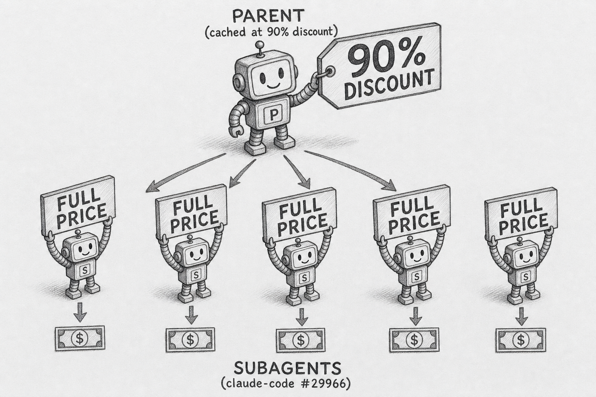
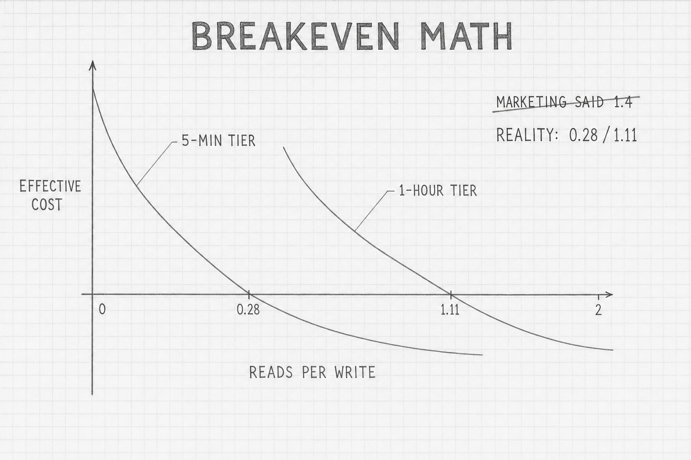

What Prompt Caching Actually Caches
What Prompt Caching Actually Caches
"Up to 80% latency reduction. Up to 90% cost reduction." OpenAI's claim, repeated by every vendor.
The evidence in your own logs:
"usage": {
"input_tokens": 4,
"cache_creation_input_tokens": 0,
"cache_read_input_tokens": 47289
}
Forty-seven thousand tokens read, four billed at full rate.
Prompt caching does not cache the prompt. It caches the work the model already did on a prefix of it. Once that distinction lands, every other behavior — why a single capitalized character invalidates 2,727 tokens, why agent SDKs silently lose the savings, why the bill drops 80% on the second call — falls out of one property of transformer attention.
flowchart TD
H([" The Mechanism "])
style H fill:#455a64,color:#fff,stroke:#90a4ae,stroke-width:3px,font-weight:bold,font-size:18px
Transformer attention is causal. Token N's key/value tensors at every layer depend only on tokens 0 through N-1. Nothing later changes them. That single property is what makes prompt caching possible: when two requests share a byte-identical prefix, the precomputed KV tensors stay valid, and the provider skips prefill on the cached portion. Anthropic's docs call this "resuming from specific prefixes". OpenAI's call it "routing requests to servers that recently processed the same prompt." Same memoization, different phrasings.

No fuzzy matching. No semantic equivalence. A single character of difference in the first 1,024 tokens of an OpenAI prompt produces a full miss — cached_tokens: 0. Anthropic Engineering documented one example where changing "senior software engineer" to "Senior Software Engineer" in Claude Code's system prompt invalidated 2,727 cached tokens.
Hash chunking is the optimization that makes the lookup cheap. OpenAI hashes the first ~256 tokens as one chunk, then 128-token increments. The cache reports tokens hit rounded to the nearest chunk boundary — which is why a prompt with 1,023 cached tokens returns cached_tokens: 0. The boundary between cached and new compute sits at the last token both prefixes share.
The cache lives provider-side, ephemeral, in GPU or CPU memory. Anthropic publishes TTLs (5 min default, 1 h extended). OpenAI uses inactivity eviction (5–10 min typical, max 1 h, up to 24 h under Extended Retention). Gemini explicit caches live as long as the paid storage TTL. Nothing crosses organization boundaries — and as of February 5, 2026, nothing crosses workspace boundaries on Claude API and Azure AI Foundry either.
flowchart TD
H([" Provider Matrix "])
style H fill:#455a64,color:#fff,stroke:#90a4ae,stroke-width:3px,font-weight:bold,font-size:18px
The four hosted providers diverge on every dimension that matters: control surface, minimum prefix, TTL options, pricing model.

| Provider | Mode | Min prefix | Read discount | Write surcharge |
|---|---|---|---|---|
| Anthropic | Explicit cache_control, max 4 breakpoints |
4096 tok (Opus 4.7/4.6/4.5, Haiku 4.5); 2048 (Sonnet 4.6); 1024 (older) | 90% (read = 0.1× input) | +25% (5-min); +100% (1-hour) |
| OpenAI | Fully automatic | 1024 tokens, 128-tok increments | 50% (4o) → 75% (4.1) → 90% (gpt-5.x) → 98.75% (audio) | None |
| Gemini | Implicit auto + explicit cachedContent |
1024 (Flash) / 4096 (Pro) | 90% across all models | None on read; hourly storage fee (USD 1 to 4.50 per MTok per hour) |
| Bedrock | Explicit cachePoint (Converse) or cache_control (InvokeModel) |
1024 tok (Claude); model-dependent (Nova) | Same as upstream | Same as upstream |
The pricing structures are architecturally different products. Anthropic charges a write multiplier and stores nothing — once the prefix is cached, holding it is free until TTL expires. OpenAI charges nothing for caching, only discounts the read. Gemini charges by the hour for storage on top of the read discount, so idle caches actively burn money. Bedrock approximates Anthropic's model with region-specific caveats.
A few 2026 details the marketing rarely surfaces. Anthropic's minimum prefix jumped from 1,024 to 4,096 tokens for the newest Opus and Haiku tiers — a four-fold increase that silently disables caching on shorter system prompts. Automatic caching on Bedrock and Vertex is not yet shipped for current Claude generations; manual cachePoint works for Claude 3.7 and Opus 4 on Bedrock, but Claude 4.6 / 4.7 has no Bedrock caching at all (claude-code#1347).
OpenAI's 24-hour Extended Prompt Cache Retention costs nothing extra on gpt-5.x and gpt-4.1. The catch: prompt_cache_key has a documented throughput cap of roughly 15 requests per minute per prefix + key combination. Above that, the load balancer overflows to fresh machines, each a one-time miss. One customer documented going 60% to 87% hit rate after sharding the cache key across multiple values.
Gemini's explicit cache is the most algebraically interesting. Caching a 100k-token prefix on 2.5 Pro for one hour costs USD 0.45 in storage; reading it once costs USD 0.0125; uncached costs USD 0.125. Break-even is four queries per hour — below four, the explicit cache loses to no cache.
flowchart TD
H([" Local Runtimes "])
style H fill:#455a64,color:#fff,stroke:#90a4ae,stroke-width:3px,font-weight:bold,font-size:18px
Local runtimes have always cached implicitly. The mechanism is the same — reuse KV state for shared prefixes — but the data structures evolved through three generations.

llama.cpp's server runs --parallel N independent slots, each with its own KV region. When a request arrives, the server picks the slot with the highest token-overlap fraction against the new prefix — longest-common-prefix matching, tunable via --slot-prompt-similarity (default 0.10). Ollama wraps this with its own envs: OLLAMA_KEEP_ALIVE (default 5 min), OLLAMA_NUM_PARALLEL (default 1, slots per model), OLLAMA_KV_CACHE_TYPE (f16 default; q8_0 halves memory at negligible quality cost; requires OLLAMA_FLASH_ATTENTION=1).
OLLAMA_MULTIUSER_CACHE is the subtle one. It does not pass through to llama.cpp — Ollama's Go runner has its own dual-strategy slot picker. Default off, findLongestCacheSlot reuses one VRAM region for fastest GPU performance. On, findBestCacheSlot tracks both longest-prefix and oldest LRU, copying KV via KvCacheSeqCp before eviction. Better hit rates under concurrent load, slightly slower miss path.
vLLM V1 hashes 16-token blocks tracked in an LRU free queue — "V1's prefix caching causes less than 1% decrease in throughput even when the cache hit rate is 0%", which is why it ships on by default in 2026. SGLang generalizes one step further into a token-keyed radix tree shared across requests. The arc is "find the best slot" → "find the longest matching subtree across the entire server."
Two details break the tidy story. TensorRT-LLM uses 128-token blocks — eight times vLLM's granularity. And LM Studio is no longer pure llama.cpp; since v0.3.4 it ships an Apple MLX engine, and the MLX path bypasses prefix cache entirely for hybrid architectures (sliding-window attention, SSM, Mamba, RWKV).
flowchart TD
H([" Agent SDKs "])
style H fill:#455a64,color:#fff,stroke:#90a4ae,stroke-width:3px,font-weight:bold,font-size:18px
Every agent SDK published in 2026 is either invisible-and-uncontrollable or breaks under multi-provider routing.

| SDK | Verdict | Knob |
|---|---|---|
| Claude Agent SDK (Py 0.1.72 / TS 0.2.126) | Auto with kill switch; subagents hardcoded OFF | DISABLE_PROMPT_CACHING=1 env; exclude_dynamic_sections preset |
| OpenAI Agents SDK (Py 0.15.1) | Auto + retention knob | ModelSettings.prompt_cache_retention="24h" |
Vercel AI SDK (ai v5; @ai-sdk/anthropic 3.0.47) |
Manual + cookbook helper; silent strip on multi-provider routing | providerOptions.anthropic.cacheControl: { type: 'ephemeral' } |
LangChain + AnthropicPromptCachingMiddleware |
Auto via middleware; 3 open bugs | middleware: [anthropicPromptCachingMiddleware({ttl: '5m'})] |
LlamaIndex (llama-index-llms-anthropic) |
Manual + LLM-level helper | Anthropic(cache_idx=-1) |
| Anthropic raw (Py 0.97.0 / TS 0.92.0) | Manual baseline | Block-level cache_control; up to 4 breakpoints |
The Claude Agent SDK auto-arranges system, tools, and conversation tail for Anthropic's auto-mode breakpoint placement. Two real controls: DISABLE_PROMPT_CACHING=1 env kill switch, and exclude_dynamic_sections preset — which removes per-user dynamic content (cwd, auto-memory, git status, current date) entirely from the cached system block. The model loses access to that context. The SDK's largest production footgun: claude-code#29966 documents that subagent invocations have enablePromptCaching hardcoded to false. For a 100k-token system + tools prefix sent to five subagents per parent task, that's USD 1.35 per task instead of USD 0.15 — a 9× overcharge that scales linearly with subagent fan-out.
Vercel AI SDK's gotcha lives in transform.ts — the applyCaching function gates on model.providerID === "anthropic". Two failure modes follow. Non-Anthropic models routed through @ai-sdk/anthropic silently drop cache_control (no error, no warning). OAuth-authenticated Claude (subscription, not API key) gets cache_control injected, then Anthropic's API rejects with HTTP 400 because prompt caching is API-tier only (opencode#17910).
LangChain's middleware reads cleanest in code but ships with three open bugs as of writing: #33709 breaks with_fallbacks(), #34542 400s on code_execution blocks, #33635 Bedrock-Anthropic ignores middleware-injected cache_control. Direct usage on ChatAnthropic without the middleware is the safer fallback.
LlamaIndex has the cleanest abstraction surveyed: Anthropic(cache_idx=-1) caches every prior message. Policy lives on the constructor instead of leaking into every message.
flowchart TD
H([" Agentic Tools "])
style H fill:#455a64,color:#fff,stroke:#90a4ae,stroke-width:3px,font-weight:bold,font-size:18px
Claude Code structures cache reuse in four layers: built-in tools and system prompt at the bottom (cached globally per CLI version), CLAUDE.md above that (cached per project), per-session context, then growing conversation messages. An explicit __SYSTEM_PROMPT_DYNAMIC_BOUNDARY__ marker separates globally-cacheable content from session-specific content. Anthropic's server places the implicit cache breakpoint after the last built-in tool, and Claude Code deliberately sorts so built-ins come first and MCP tools come separately — adding an MCP server invalidates the messages region but leaves built-ins warm. MCP server instructions fields are recomputed every turn and not cached; only tool schemas sit in the cached prefix region.

Hit rate has been independently triangulated. A 30-day single-user telemetry capture from claude-code#24147 reports 5.09 billion cache reads vs 176 million cache creations vs 3.9 million fresh input tokens — 96.65% hit rate by read / (read + create + fresh). The Camp blog independently reports 95–96% from JSONL parsing of separate sessions. Two independent measurements within one percentage point.
The same telemetry reveals a subscription-tier footgun. On Pro and Max plans, cache reads consume usage quota at the full rate even though the dollar cost is discounted — 99.93% of the user's quota burn was cache reads representing zero new compute. The dollar-cost model and the quota-counter model are decoupled. A Pro/Max user hitting their cap should not interpret it as "expensive caching"; it's a quota-counter design choice.
Other agentic CLIs land at different points. Codex CLI rides OpenAI's automatic cache and pins prompt + tool order. Cursor relies on provider-routed caching at ~65% Composer 2 hit rate, and breaks badly when Auto mode model-switches across providers — Cursor v2.6.12 routed requests to a model variant that didn't support Anthropic-style caching, producing zero cache reads and zero cache writes for many users until v2.6.18 fixed it. Pinning a model is the recommended user lever. Aider ships the most novel option: --cache-keepalive-pings N issues lightweight pings every five minutes to defeat the 5-minute TTL during human reading gaps. It's the only CLI surveyed that does this.
flowchart TD
H([" The Math "])
style H fill:#455a64,color:#fff,stroke:#90a4ae,stroke-width:3px,font-weight:bold,font-size:18px
A figure circulates in vendor-adjacent blog posts and conference talks: caching is cost-positive only above 1.4 reads per write. The figure is wrong.

For Anthropic Sonnet 4.5 at USD 3 per MTok base input — a representative number, not a price quote — a 5-minute cache write costs 1.25 × 3 = USD 3.75 per MTok. The premium over baseline is USD 0.75 per MTok. A cache read costs 0.1 × 3 = USD 0.30 per MTok, saving USD 2.70 per MTok against baseline. Break-even: 0.75 ÷ 2.70 = 0.278 reads per write. Roughly one read for every four writes.
The 1-hour tier costs more on the write side. 2 × 3 = USD 6 per MTok at write, premium USD 3 per MTok over baseline. Same USD 2.70 per MTok savings on read. Break-even: 3.00 ÷ 2.70 = 1.111. Slightly more than one read per write.
The practical consequence is the opposite of what the marketing implies. The 5-minute cache is cost-positive very early — even a single read against three or four writes makes it profitable. The 1-hour tier is cost-positive only above one read per write, which matters for low-traffic apps. A side project hitting a cached prefix once an hour will lose money on the 1-hour tier and break even on the 5-minute tier.
Independent benchmarks support the framing. arXiv 2601.06007 measured 41–80% cost reduction and 13–31% TTFT improvement across 40 sessions × 3 providers. The BSWEN production trace measured 84% hit rate and ~74% input cost saved on a real Claude Code workload. F5's stable-vs-perturbed A/B measured 65% TTFT improvement.
flowchart TD
H([" Footguns "])
style H fill:#455a64,color:#fff,stroke:#90a4ae,stroke-width:3px,font-weight:bold,font-size:18px
Caching breaks in patterns. Five most common in production:

- Timestamps in the system prompt.
datetime.now()invalidates every second. Most common cache-killer.openclaw#19534documented one customer running 170,000 tokens written and 0 read every request because ofCurrent Date & Timein the system prompt. - Tool array reordering. Tool order is part of the hash. Frameworks that sort alphabetically on load, or pull from a
dictwith non-deterministic iteration order, blow the cache from the first reordered tool onward. - 5-minute TTL idle eviction. Any human-in-the-loop pause longer than five minutes forces a full re-prefill at the 1.25× write rate on the next turn.
- Model alias drift.
claude-sonnet-4-5andclaude-sonnet-4-5-20250929are different models and break each other's cache. Aliases also rotate silently when new snapshots ship. Pin a dated snapshot. - Subagent caching hardcoded off.
claude-code#29966. For agent loops that fan out to subagents, the largest dollar-impact footgun in production agentic tooling.
The privacy footguns are subtler. Stanford CS191 and alphaXiv 2502.07776 audited eight providers and found seven shared cache globally across users, detectable via timing attacks. After disclosure, OpenAI and Anthropic confirmed per-organization caching — but per-org doesn't defeat intra-org timing attacks. Treat prompt_cache_key as a routing hint, never as auth. NDSS 2025's Prompt Leakage via KV-Cache Sharing demonstrates extraction on shared inference nodes.
flowchart TD
H([" What To Do "])
style H fill:#455a64,color:#fff,stroke:#90a4ae,stroke-width:3px,font-weight:bold,font-size:18px

If you use a commercial agentic IDE (Claude Code, Codex CLI, Cursor), the rules are mostly negative. No datetime.now() in custom prompts. Don't reorder tools mid-session. Pin a dated model snapshot, never an alias. Use /compact instead of /clear. Install MCP servers at session start. On Pro and Max subscription tiers, watch the quota counter, not just the dollar bill — cache reads burn quota at full rate even when discounted on the wallet side.
If you build on hosted APIs directly, verify with telemetry. cache_read_input_tokens (Anthropic) and prompt_tokens_details.cached_tokens (OpenAI) are the only ground truths. A high cache_creation_input_tokens looks like efficiency and is the bill. Real efficiency is cache_read / (cache_read + cache_creation + input) weighted by price, not count.
If you build agent loops that fan out to subagents, treat the subagent cache as off until proven otherwise. Design the subagent prefix to be independently cacheable rather than relying on inherited state.
If you run local inference, choose the right runtime. vLLM V1 and SGLang ship prefix caching on by default in 2026 with under 1% overhead at zero hit rate. Ollama at default settings caches per-slot for one user; flip OLLAMA_MULTIUSER_CACHE=true for concurrent multi-user load. On Apple Silicon, verify whether your model is on the MLX path — modern hybrid architectures bypass prefix cache there.
The pattern is universal: deterministic prefix memoization scales further than developers building on top of it usually assume, and breaks in ways that look like model degradation when they're really cache degradation. Anthropic's April 23, 2026 postmortem describes fifteen days of "model nerfing" complaints that turned out to be a per-turn cache invalidation bug shipped without canary-testing prefix-hash stability. The cache that was supposed to cache stopped caching, and the only signal was the bill. Prompt caching doesn't make the model faster — it removes a cost ceiling that was making the bill look artificially expensive, when the bill is checked.
References
- Anthropic. "Prompt caching." docs.claude.com/en/docs/build-with-claude/prompt-caching.
- OpenAI. "Prompt caching." developers.openai.com/api/docs/guides/prompt-caching.
- Google. "Gemini context caching." ai.google.dev/gemini-api/docs/caching.
- AWS. "Bedrock prompt caching." docs.aws.amazon.com/bedrock/latest/userguide/prompt-caching.html.
- ggml-org. "llama.cpp server README and PR #7728." github.com/ggml-org/llama.cpp.
- vLLM. "V1 alpha release: prefix caching by default." vllm.ai/blog/v1-alpha-release.
- Anthropic Engineering. "Lessons from building Claude Code: prompt caching is everything." claude.com/blog.
- Don't Break the Cache (2026). arXiv:2601.06007.
- BSWEN. "Prompt caching production trace, March 2026." docs.bswen.com.
- Anthropic Engineering. "April 23 postmortem." anthropic.com/engineering/april-23-postmortem.
- GitHub Issue. "Subagent prompt-caching hardcoded off." claude-code#29966.
- GitHub Issue. "Cache TTL silently regressed from 1h to 5m." claude-code#46829.
- GitHub Issue. "Cache reads consume 99.93% of usage quota." claude-code#24147.
- Aider. "Prompt caching." aider.chat/docs/usage/caching.html.
- NDSS 2025. "Prompt Leakage via KV-Cache Sharing in Multi-Tenant LLM Serving Systems." ndss-symposium.org.